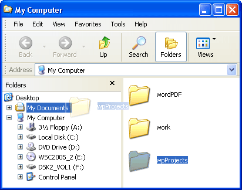

Free
computer Tutorials
|
Free
computer Tutorials
|
|
 home home |
Stay at Home and Learn | ||||
Windows XP Tutorials: Moving Folders on your Hard Drive
Drag and Drop MovingThe easiest way to move one folder to another folder is to use drag and drop. And the easiest way to explain drag and drop is by doing it! To drag the new folder you created earlier
and drop it inside your "My Documents" folder, do the following:
In the image below, a folder called "MyWPProjects" is being dragged to the My Documents folder on the C Drive. 
Cut and Paste MovingIf all that was a bit tricky, you can use Cut and Paste to move your folder instead. To cut and paste one folder inside another, do the following:
Instead of cutting the folder and pasting, you can just Copy the folder
instead. To copy the folder instead of cutting, follow the steps outlined
above, but when the menus drop down select "Copy". Then select
"Paste" after you have double clicked on the My Documents folders.
Everything we've said above about folders also applies to files. In other words, you can rename a file like you did above, you can copy a file, move it with drag and drop or cut and paste, and you can even create a file with Windows Explorer. Just click on File. From the sub menu select New. You'll see a list of software packages that you can create new files for. In the next lesson, we'll look at how to copy files from a CD Rom to your hard drive.
<--Back One Page Move on to the Next Part--> |
|||||
|